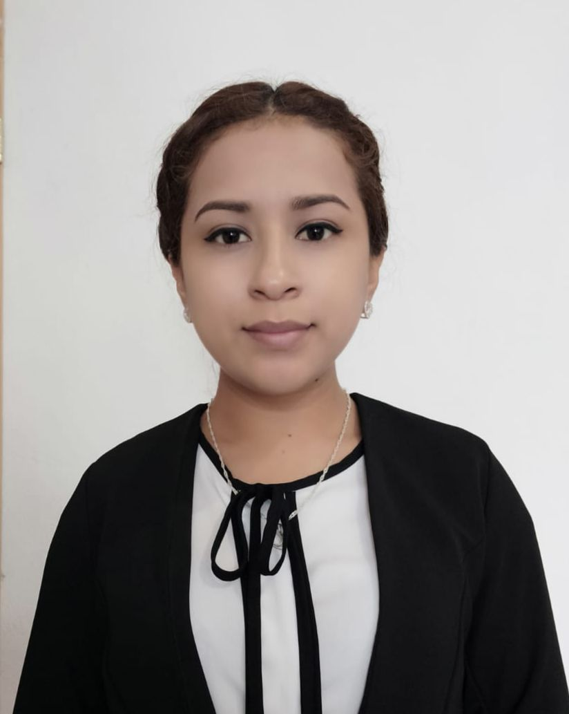

Ing. en Tecnologias de la Información y Comunicación

Acerca de mi
Soy una joven con muchas ganas de superarse en busca de oportunidades,
dispuesta a aprender mas cada día. Me considero una persona adaptable
capaz de lograr desempeñarme de manera eficiente, siendo una persona responsable,
comprometida, inteligente y cumplida.
(15 de Marzo 2022 a hoy) "VANGENT" Operador de modulo SAT
Actividades realizadas: Atención masiva de contribuyentes que acuden para generación de e.firma,
escaneo de documentos, toma de biométricos, todo cronometrizado y grabado para fines de calidad de servicio.
(2021, 9 meses) "Merceria Lopsan"
Actividades realizadas: Creacion de inventarios, vendedora de mostrador, atencion al cliente,
cajera y realizacion de facturas.
(2020, 4 meses) Prácticas profesionales de Ingeniería en la empresa SERVICIOS ELÉCTRICOS
INDUSTRIALES MACIAS S.A.S (SEIMS) en Toluca de Lerdo.
Actividades realizadas: Cotizaciones de equipo necesario para la producción de la empresa,
generación de documentos técnicos (manuales de usuario), creación de pagina web empresarial
como proyecto final con su correspondiente documentación y trabajo de oficina como manejo de
archivo, generación de reportes.
(2018, 4 meses) Prácticas profesionales de TSU en Hospital Florencia área de Sistemas Toluca de Lerdo.
Actividades realizadas: Levantamiento de inventario de los equipos de cómputo,
soporte a equipos de cómputo, organización y división de actividades de manera semanal.
(2015, 6 meses) Servicio social en Comisión del Agua del Estado de México (CAEM).
Actividades realizadas: Manejo de papeleo, llenado de documentos administrativos.
Trabajos de medio tiempo durante universidad
(2020-2021, 1 año) Estética “Rojo Scarlata” ubicada en Tejupilco de Hidalgo.
Desempeñaba el puesto de auxiliar de estilismo.
(2016-2020, 4 años) Panaderías “Jaimes López”
Servicio y atención al cliente, cajera.
(2014-2016, 2 años) Taquería “San Andres”
Servicio y atención al cliente, mesera y cajera.
Educación
INGENIERO EN TECNOLOGÍAS DE LA INFORMACIÓN Y COMUNICACIÓN
2018 a 2020
UNIVERSIDAD TECNOLÓGICA DEL SUR DEL ESTADO DE MÉXICO – TEJUPILCO
TÉCNICO SUPERIOR UNIVERSITARIO EN TECNOLOGÍAS DE LA INFORMACIÓN Y
COMUNICACIÓN ÁREA SISTEMAS INFORMÁTICOS
2016 a 2018
UNIVERSIDAD TECNOLÓGICA DEL SUR DEL ESTADO DE MÉXICO – TEJUPILCO